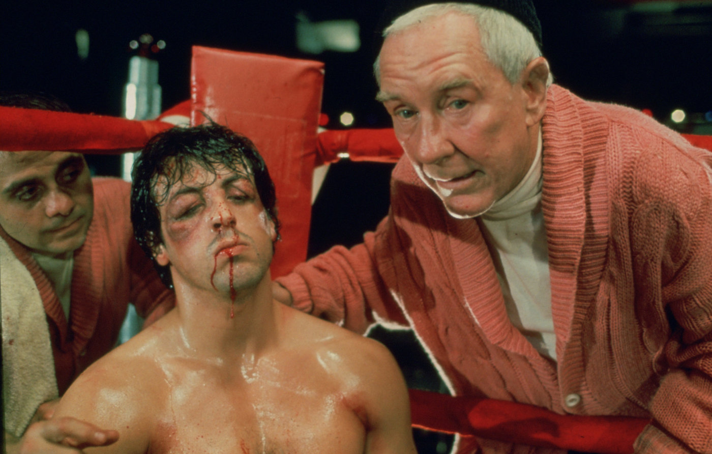

FILMOGRAFIA DE SYLVESTER STALLONE
-
RAMBO I - PROGRAMADO PARA MATAR
Rambo (Sylvester Stallone) é um veterano da Guerra do Vietnã que é preso injustamente pelo xerife Teasle (Brian Dennehy), mas consegue fugir e promove uma guerra não só contra o policial mas contra toda uma cidade, causando pânico e destruição, que é o que ele sabe fazer de melhor.
-
RAMBO II - A MISSÃO
John Rambo (Sylvester Stallone) está cumprindo pena em uma penitenciária federal quando recebe uma proposta: se participar de uma missão suicida (que consiste em localizar prisioneiros americanos) no sudeste asiático será perdoado e reintegrado ao exército. Ele concorda mas não imaginava que seria traído pelos compatriotas, que não querem de fato nenhuma prova de prisioneiros, pois isto acarretaria gastos de 2 bilhões de dólares para libertá-los.
-

RAMBO III
O ex-soldado John Rambo recusa um pedido do coronel Trautman, seu antigo líder de pelotão, para uma nova missão, pensando apenas em continuar com o seu novo estilo de vida, baseado na crença budista. No entanto, quando o coronel Trautman é raptado pelos russos na fronteira do Afeganistão e o governo americano é incapaz de intervir oficialmente, Rambo decide agir por sua conta e risco.
-
RAMBO IV
Vinte anos depois, John Rambo vive na Tailândia e leva uma vida simples e solitária nas montanhas, pescando e capturando cobras venenosas para vender. Um grupo de missionários precisa passar pelas minas terrestres escondidas pelo caminho que leva ao campo de refugiados, onde pretendem entregar suprimentos médicos e comida para a tribo Karen. Depois de muita insistência, Rambo aceita levá-los, porém, um tempo depois, o grupo é sequestrado pelo exército birmanês e o herói terá de resgatá-los.
-
RAMBO: ATÉ O FIM
O tempo passou para Rambo, que agora vive recluso em um rancho. Sua vida marcada por lutas violentas ficou para trás, mas deixou marcas inesquecíveis. No entanto, quando uma jovem de uma família amiga é sequestrada, Rambo precisa confrontar seu passado e resgatar suas habilidades de combate para enfrentar o mais perigoso cartel mexicano. A busca logo se transforma em uma caçada por justiça, na qual nenhum criminoso é perdoado.
-
FALCÃO - O CAMPEÃO DOS CAMPEÕES
Lincoln Falcão é um caminhoneiro que tenta reconstruir sua vida após a morte da esposa. Ele busca se reaproximar do filho de 12 anos, Michael, de quem se afastou anos atrás. O garoto não dá muita atenção ao pai, até que Falcão se inscreve em um campeonato nacional de queda de braço, realizado em Las Vegas, e o leva junto na estrada. Mas, o rico e insensível avô do garoto manda seus capangas para acabar com o relacionamento do pai e do filho e exige que o menino seja levado de volta.
-
STALLONE COBRA
O tenente Marion "Cobra" Cobretti está no centro de uma série de assassinatos cometidos por uma sociedade secreta chamada Nova Ordem, em que os assassinos escolhem os membros mais fracos da sociedade para o extermínio. Com o número de homicídios aumentando, Cobra mantém a modelo Ingrid em custódia depois que ela testemunha contra o líder da Nova Ordem. Cobra se apaixona por Ingrid e eles encontram abrigo em uma pequena cidade, mas logo precisam lutar pela sobrevivência.
-
ALVO DUPLO
Jimmy Bobo (Sylvester Stallone) foi contratado para matar um policial corrupto e consegue completar sua missão. Mas o contratante resolve matar ele e seu parceiro, dando início a uma intensa caçada. Só que o detetive Taylor Kwon (Sun Kang), da polícia de Washington, também quer saber quem foi o responsável pela primeira morte. Agora, dois caras durões e pertencentes a lados opostos da lei vão unir forças para dar um ponto final nesta onda de assassinatos brutais, mas a tarefa não será nada fácil e muito sangue vai rolar.
-
CONDENAÇÃO BRUTAL
Faltam apenas seis meses para Frank Leone (Sylvester Stallone), um prisioneiro modelo, terminar de cumprir sua pena por um crime menor, em uma prisão de segurança mínima. Até que, repentinamente, ele é transferido para uma prisão de segurança máxima que é administrada pelo diretor Drumgoole (Donald Sutherland), que nutre um imenso ódio por Leone e vai fazer de tudo para que ele nunca mais seja solto, pois transformará o que resta da sua pena em um inferno. Drumgoole espera que fazendo isto Leone irá se descontrolar, justificando uma ação violenta dos guardas ou mesmo dos detentos, que provocam Leone para conseguir algum favor de Drumgoole.
-
COP LAND
Em virtude do seu modo gentil, um homem meio surdo (Sylvester Stallone) que nunca conseguiu ser um policial em Nova York, foi eleito xerife de um pequeno vilarejo em Nova Jersey, onde moram vários policiais. É lá que o pacato guardião da lei vai tomando consciência da rede de corrupção e assassinato que envolve alguns dos mais sérios moradores da região.
-
RISCO TOTAL
Traumatizado com um acidente que resultou na morte de uma amiga, o experiente alpinista Gabe Walker (Sylvester Stallone) se afastou das montanhas. Um ano após o acontecido, no entanto, ele é chamado para resgatar um grupo em apuros nas Montanhas Rochosas. A missão, porém, logo revela-se uma armadilha: Gabe está lá na verdade para guiar o bando de perigosos terroristas até um tesouro perdido.
-

ROCKY: UM LUTADOR
Rocky Balboa (Sylvester Stallone), um lutador de boxe medíocre que trabalha como "cobrador" de um agiota, tem a chance de enfrentar Apollo Creed (Carl Weathers), o campeão mundial dos pesos-pesados, que teve a idéia de dar oportunidade a um desconhecido como um golpe publicitário. Mas Rocky decide treinar de modo intensivo, sonhando apenas em terminar a luta sem ter sido nocauteado pelo campeão.
-
ROCKY II: A REVANCHE
Após o término do confronto contra Apollo Creed (Carl Weathers), Rocky (Sylvester Stallone) promete à Adrian (Talia Shire), sua esposa grávida, que irá largar os ringues de boxe. Porém, Apollo quer provar que Rocky não foi nocauteado por acaso e, como este está sem dinheiro, promovem outra luta entre os dois pugilistas.
-
ROCKY III: O DESAFIO SUPREMO
Após ter sido derrotado por Clubber Lang (Mr. T), um novo e temível adversário, Rocky (Sylvester Stallone) passa a ser treinado para a luta revanche por Apollo Creed (Carl Weathers), seu antigo rival, que deseja de Rocky apenas um pequeno favor em troca dos seus serviços.
-

ROCKY IV
Depois de recuperar o título de campeão de boxe, Rocky Balboa planeja se aposentar e viver com sua esposa, Adrian. No entanto, durante uma exibição, o amigo de Rocky, Apollo Creed, é impiedosamente espancado até a morte pelo desmedido russo recém-chegado Ivan Drago. Assim, Rocky decide ir até a União Soviética para enfrentá-lo e vingar o amigo em uma luta no dia de Natal.
-
ROCKY V
Na luta com Drago, o lutador russo, Rocky (Sylvester Stallone) acabou recebendo uma lesão permanente. Assim é forçado a se retirar do boxe e, para piorar as coisas, descobre que seu contador roubou sua fortuna. Sem dinheiro e não podendo voltar a lutar, ele começa a treinar um jovem (Tommy Morrison) que promete ser um grande lutador. Mas seu trabalhado não é terminado, pois um empresário atrai o jovem pugilista com um alto salário, mas mestre e aluno ainda vão se reencontrar como rivais.
-
ROCKY BALBOA
Rocky, aposentado há muito tempo, trabalha em um restaurante na Filadélfia e lamenta a perda de sua amada mulher, Adrian. Com saudade de seus dias de glória, ele pretende voltar ao ringue e aceita o desafio de lutar contra o atual campeão mundial dos pesos pesados, Mason "the Line" Dixon.
-
TANGO E CASH: OS VINGADORES
Dois policias rivais de Los Angeles são obrigados a se unir quando um chefão das drogas os envolve num crime que não cometeram. Eles acabam presos e a única opção é escapar para trazer o verdadeiro culpado à justiça.
-
O DEMOLIDOR
O policial John Spartan e o violento bandido Simon Phoenix são condenados a um encarceramento congelado conhecido como CryoPrison. Quando Spartan é finalmente descongelado 36 anos depois, já é 2032, e Los Angeles é agora uma utopia pacifista chamada San Angeles. Porém com Phoenix novamente à solta, Spartan devem colaborar com uma policial do futuro, Lenina, para apreender o assassino.
-
O ESPECIALISTA
Mulher contrata um especialista em explosivos para realizar plano de vingança contra os gângsters que mataram seus pais. Ray Quick trabalhava para a C.I.A., mas largou tudo depois que uma operação fracassada contra um traficante de drogas provocou a morte de uma criança. Agora, o perito em explosivos que vive em Miami é persuadido por uma mulher obcecada que quer se vingar de uma poderosa família do crime organizado.
-
O JUIZ
O mundo mudou completamente no terceiro milênio. A lei entrou em colapso e a sociedade passou a ser regida por uma força que atua como juiz, júri e carrasco. Dredd, o mais lendário dos juízes é acusado como assassino e tenta provar sua inocência.
-
ASSASSINOS
Um veterano assassino profissional (Sylvester Stallone) que é considerado o melhor no ramo pensa em sair do negócio, mas resolve aceitar como último trabalho eliminar uma hacker (Julianne Moore). Ele acaba sendo traído pelo contratante, passando então a ser caçado por um jovem assassino (Antonio Banderas) que planeja matá-lo para ficar no seu lugar. Esta situação obriga-o a se unir à mulher que pretendia matar.
-
DAYLIGHT
Um carro em fuga bate em um caminhão cheio de material tóxico, provocando uma explosão que sela ambas as saídas de um túnel subterrâneo entre Manhattan e Nova Jersey. Esta situação leva Kit Latura (Sylvester Stallone), ex-chefe dos Serviços Médicos de Emergência da cidade, a tentar encontrar um caminho para salvar os sobreviventes antes que o ar acabe ou o Rio Hudson inunde tudo.
-
ALTA VELOCIDADE
Jimmy Blye (Kip Pardue) é um talentoso piloto novato na Fórmula Indy que vem perdendo o foco de sua carreira e, com isso, acumulando derrotas nas pistas e sendo cada vez mais pressionado por seu ambicioso irmão. Até que Carl Henry (Burt Reynolds), o dono de uma escuderia, resolve ajudá-lo contratando Joe Tanto (Sylvester Stallone), um veterano piloto que sofreu um grave acidente no passado que quase o matou e também a outro piloto. Mas, para ajudar Blye, Tanto terá que superar seu próprio passado e lidar ainda com Cathy (Gina Gershom), sua ex-esposa, que agora está casada com seu principal rival nas pistas, Memo Moreno (Cristián de la Fuente).
-
OS MERCENÁRIOS
Um grupo de mercenários, liderado por Barney Ross, e seus homens de confiança aceitam uma missão que parece ser rotineira: uma operação secreta, a mando da Igreja, para invadir o país sul-americano de Vilena e derrubar seu ditador. Não demora muito para o grupo perceber que a missão é uma operação suicida. Presos em uma perigosa teia de traições, mas sabendo que um inocente está em perigo, Barney e seus homens decidem finalizar o trabalho.
-
OS MERCENÁRIOS 2
Grupo de mercenários se une para evitar que criminoso roube uma grande quantidade de plutônio, que possibilitaria a produção de armas nucleares. Após o assassinato de um amigo e o sumiço do mapa que leva ao plutônio, o grupo sai em busca de vingança.
-
OS MERCENÁRIOS 3
Barney e sua trupe de mercenários resgatam Doc, um dos integrantes do grupo, que estava preso há oito anos. Ao participarem de uma missão, os mercenários são surpreendidos quando reencontram Conrad, um comerciante de armas impiedoso, que Barney pensava ter matado. Novos membros, mais jovens e mais rápidos, entram para equipe e um novo duelo começa.
-

ROTA DE FUGA
Ray Breslin (Sylvester Stallone) é a maior autoridade existente ao se falar em segurança. Após analisar diversas prisões de segurança máxima, ele desenvolve um modelo à prova de fugas. Quando é preso, Ray é enviado justamente para a prisão que criou. Lá ele precisa encontrar uma brecha não imaginada até então, que permita sua fuga.
-
AJUSTE DE CONTAS
Billy "The Kid" McDonnen (Robert De Niro) e Henry "Razor" Sharp (Sylvester Stallone) foram grandes boxeadores que, agora, estão aposentados. Entretanto, mesmo tendo subido no ringue pela última vez há décadas, eles aceitam se enfrentar em uma última luta para desempatar o confronto histórico. Enquanto se preparam para o confronto, os dois terão que confrontar pessoas de seus passados: a bela Sally (Kim Basinger) e o filho B.J. (Jon Bernthal).
-
CREED: NASCIDO PARA LUTAR
Adonis Johnson (Michael B. Jordan) nunca conheceu o pai, Apollo Creed, que faleceu antes de seu nascimento. Ainda assim, a luta está em seu sangue e ele decide entrar no mundo das competições profissionais de boxe. Após muito insistir, Adonis consegue convencer Rocky Balboa (Sylvester Stallone) a ser seu treinador e, enquanto um luta pela glória, o outro luta pela vida.
-
CREED II
Adonis Creed (Michael B. Jordan) saiu mais forte do que nunca de sua luta contra 'Pretty' Ricky Conlan (Tony Bellew), e segue sua trajetória rumo ao campeonato mundial de boxe, contra toda a desconfiança que acompanha a sombra de seu pai e com o apoio de Rocky (Sylvester Stallone). Sua próxima luta não será tão simples, ele precisa enfrentar um adversário que possui uma forte ligação com o passado de sua família, o que torna tudo ainda mais complexo.
-
FALCÕES DA NOITE
Dois policiais embarcam em uma missão quase impossível: localizar um dos terroristas mais temidos da Europa que acaba de chegar em Nova York. Depois de provocar uma explosão na cidade de Londres, o terrorista internacional pretende fazer o mesmo na cidade americana e a tarefa dos policiais é encontrá-lo antes que ele ataque novamente. Com muita ação e suspense, a perseguição leva a um confronto mortal entre policial e terrorista.
-
O IMPLACÁVEL
Sylvester Stallone é Jack Carter, um mafioso de Las Vegas que chega em Seattle para enterrar seu irmão que, aparentemente, foi morto em um acidente de carro. Em casa, ele começa a desconfiar que a morte do irmão não foi acidental. Jack inicia uma jornada de dois dias pela cidade, percorrendo um caminho de vingança, reconectando com sua família e, finalmente, encontrando a redenção.
-
MISSÃO PERIGOSA
Quando o chefe da máfia Angelo é morto em um restaurante, seu leal guarda-costas Frankie, resolve proteger a filha de Angelo, a irritadiça socialite Jennifer, que também pode estar em perigo. Jennifer, porém, nem sequer sabe que Angelo é seu pai, já que ele a deu para adoção anos atrás. Depois que Frankie lhe conta a verdade, ela decide vingar a morte de Angelo.
-
D-TOX
Jake Malloy (Sylvester Stallone) é um policial especializado em capturar serial killers, até que se vê às voltas com um psicopata que assassina sua namorada e logo após comete suicídio. Abalado com tal acontecimento, Malloy é então enviado para um clínica especializada em recuperar policiais com distúrbios psicológicos. Porém, pouco após chegar à clínica seus residentes começam a ser mortos um a um, fazendo com que Malloy tenha que assumir as investigações do caso.
-
PARE! SENÃO MAMÃE ATIRA
Sofrendo com o fim de um romance, o policial machão Joe Bomowski (Sylvester Stallone) recebe a visita de sua mãe bisbilhoteira, Tutti (Estelle Getty). A matriarca só deixa o filho mais nervoso, com suas tentativas de ajuda. Até que Tutti testemunha um assassinato múltiplo brutal e leva sua bisbilhotice ao extremo, quando gruda no filho como se fosse sua parceira policial, para tentar solucionar o caso.